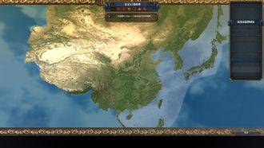

| 黑暗中华 | |
|---|---|
|  | |
| LOGO | |
| 别名/游戏中名称 | 黑暗中华-中华乱世 |
| 类型 | 游戏内容大改 |
| 作者 | 漢君_（贴吧ID） |
| 版本 | 无 |
| 论坛/贴吧 | QQ群：573913769 |
| STEAM创意工坊 | 无 |
此MOD是作者汉君制作的反应并模拟中华乱世时期各个政权以及英雄人物，衣冠士族，乃至夷狄戎蛮，平民百姓生存状态的综合性的MOD。 而所谓的中华乱世时期，这里所指是汉末三国天下秩序崩坏以来，至隋唐新帝国的形成为止的魏晋南北朝时代。
剧本
（暂定）
黄巾之乱
永嘉之乱
侯景之乱
其中永嘉之乱后即五胡乱华，十六国时代，将会成为第一个进行制作的重心
就目前而言，MOD的制作进度大概只有%10，也就是粗略完成了大地图的制作。
而对于我们的MOD总体的期望，即是希望它能够拥有超于原版的游戏内容与体验。 在游戏理念上，我们将会更多的偏向于玩家所扮演的，不再仅仅是一个政权，而更多拥有个人与家族的特质。并且相对于原版的扩张多是省份的扩张，我们的MOD将引入人口系统，在扩张方面，则更加侧重人口的增长与迁移，如诸葛亮北伐夺取当地人口故事。并且将以人口的迁徙来反应历史上五胡人口迁徙入华的诸多事件。
地图-省份
以上为对MOD内容与理念的概述，那么接下来，我将会为大家对我们的MOD中的地图-省份的划分做一些基本介绍。 首先，如题图所示，以大东亚地区为主体，也就是以北至贝加尔湖，南至越南中部，西包葱岭，东括日本列岛的大地图来替换原版的世界地图。
在省份的划分方面，参考了东汉至隋唐的行政区划，在确保玩家能够方便的点选到省份之后，便开始了以县域，以及各个历史关隘为基准的约700个省份的规划。 大体而言，省份的规划拥有七个主要特点：
1.对于汉地省份，细化到县，如属徐州的东海郡下辖：戚县；承县；兰陵等等。
2.在险要区域增加关隘，带有堡垒等级与防御效率的加成，如剑门关，潼关，虎牢关，壶口关等。
3.对于高山沙漠，如秦岭；太行山；燕山，塔克拉玛干沙漠等多用不可通行区域加以限制移动，凸显历史关隘的作用，使“兵家必争之地”名副其实。
4.三大可通航河流：黄河；淮河；长江。
5.对于西域省份的划分，以城邦古国的大致分布为基准 如龟兹；焉耆；精绝等城邦。
6.对于草原省份的划分，若中央政权曾有划分，则采用之，如河套地方，阴山以南的云中郡，九原郡等。
7.若地方民族政权曾于某处筑城的，则采取城名代表省份名字，如鲜卑之龙城，高句丽之国内城，吐谷浑之伏埃城等。
总结一番，更精细，更历史的东亚省份划分，所带来的，必然是更良好的游戏体验，更深刻的代入感，以及相对原版4000个省份的，更快的电脑运行速度。
陆战系统概述
兵种的分类
大家知道。原版游戏中存在着三种兵种 即 步兵类 骑兵类 炮兵类
而相对于原版，我们所改动更多的，是后两者。
① 弓兵类
关于炮兵类，就像我们在上一个预告贴中所展示的一般，我们的剧本设置在中古时期，因此就有必要替换掉原来的炮兵类兵种。 可能大家已经猜到了，目前是方案是使用弓兵来替代炮兵的地位。 那么下一步我将为诸君介绍弓兵的定位与作用。 首先，弓兵的定位是一种廉价的持弓步兵，也就是说弓兵的价格甚至会低于步兵的造价（或等同于）。 与此对应的，弓兵具有较低的战斗力点数与士气点数。其与步兵的优势，只在于能够提供一定辅助后排火力输出与围城点数加成。 并且弓兵也具有的较低冲击点数，当其被填充到前排时，同样会造成一定伤害。
② 骑兵类
正如我们的题图所示，骑兵，毋庸置疑的是冷兵器时代战斗力的王者，特别在是骑兵装备装甲的完善，与冲击战术的发展后。当具装骑兵进行冲锋时，可谓是一股崩山铁流顿时涌进战场，带给敌人以巨大的恐惧。 为了凸显骑兵的战斗力与精锐性，我们将大幅提升骑兵的兵种点数与价格。
普通部队与精锐部队
对于历史有所关注的朋友，可能对那些曾耀武扬威，名震天下的精锐部队，如先登死士，白马义从，虎豹骑等等，感到神往，而为其的强悍与荣耀振奋不已。 那么，在这里，我们将把这些精锐部队投放到实际游戏当中，而他们是否能够创造自己的战绩与辉煌，就要看你的布置与统御了。
现在，我们将对其进行一个基本介绍，首先是他的出现方式。
在黑暗中华MOD当中，科技的提升不再是重点，而理念的抉择才能真正决定国家发展的方向。 比如，当你完成骑兵理念组后，随着一系列骑兵部队装备与技术的提升，那么你的国家便拥有了组建一支精锐骑士部队的能力。 在国家决议一栏，就会出现相关决议，花费金钱，人力，点数之后，便可以在你的首都地区得到一支崭新的光甲耀日之兵。
而该骑士部队拥有远超于普通骑兵的战斗力与士气点数，如果与普通骑兵部队在相同的数量上开战，则几乎存在着碾压的局面。而相对的，骑士部队的花费与维护费用会相当高昂。 因为欧陆风云中部队维护费用全部锁定统一计算方式，所以我们不得不使用一些非常规办法，来体现精锐部队的高昂花费。
那就是使用原版中的雇佣兵机制。由于雇佣兵的维持花费于普通士兵独立计算，这样，就轻松的解决了装备不同，待遇一样的问题。
人力补充
并且人力补充速度会调整到一个很低的数值，我们更加希望，玩家更多使用合并按钮，并以另造新兵的方式来进行战斗部队兵员的补充。 毕竟，在我们游戏中，经常出现后备兵员费尽千辛万苦。穿越山和海洋，不远万里来到战场，然后死掉的故事。这是很不合理的。
步骑比例
废除步骑比例，任意科技组都可以使用全骑兵部队来进行征战，然而，这很贵。性价比很低。
关隘与堡垒的使用，与攻城。
关隘省份会得到一个防御效率与堡垒等级的加成，并且在省份建筑界面，会有许多效果不一的城防建筑物，供善于布局与防守的玩家进行开发。 而堡垒系统，将会有更大的作用，具体的效果，郡内仍在讨论之中。 攻城中，会出现许多的攻城事件，如，在堡垒外修建攻城器械，你可以花费一定的金钱与人力，来使得要塞防御效率大大降低。并且在你对敌国有间谍渗透的情况，有可能会出现投诚事件，增加围城进度（间谍事件暂时不会做得很细，需等待新汉化版本加入间谍网络。）。 而强攻的人力消耗也相对原版更小了，在人力充沛，战局急迫时，也许可以一搏。
兵员来源
在我们的黑暗中华MOD中，由于使用了人口机制，不再存在所谓天外飞兵，也就是雇佣兵机制。 有钱，不再能吸引火星人来到地球当兵。 但有钱，确实可以招揽各方流民，以及游荡的蛮族为你效力。 但也应该当心他们在势力强盛且对你不忠时，会做出一些不法之事。 而人力的常规来源，即为各群国编户，平民百姓。一般而言，通常提供的人力较少，在遭遇大规模战争时，玩家需要点击征兵按钮，以减少人口的代价，得到更多的兵员。 也就是说，透过游戏的视窗，我们也许能够想象到一幅幅泪母送子，妻别女泣的模样。这些士兵，也不再是随意牺牲的数字，我们多少希望，赋予其一些生命的含义。
真实的动态人口系统综述
《黑暗中华》将拥有真正的动态人口系统，来体现乱世之间的战争与和平，千万生命在中华大地上的消起与转逝。
人口的分类
对于定居人口：
以千户为单位 1税基 = 一千户编户 生产度 = 该地方编户人口所能提供的有效生产值 人力值 = 该地方编户人口所能提供有效人力值
我们以税基来反应郡国县域的总人口，同时在每个省份存在一个生产力/人力修正，该修正的具体大小，由政策，省份地形，省份建筑，省份产品等等决定。而将税基数与修正进行乘法运算，便可得出具体的相应发展度。
而人口的自然增长机制（见下第三条）或在其他使税基改变的事件下，则只对税基进行运算，并根据税基的变化情况，计算出新的生产与人力发展度。
对于流动人口：
流动的异民族人口：在其本部，比如各个草原与山区等，同样以税基反应总人口，各修正则有不同。而当异民族人口流动到异文化省份时，则使用下方所述省份变量机制。 以省份变量（整数）来反应具体落数（千），而根据省份变量，来为省份提供一定增益或减益 e.g. “右部都尉可六千余落，居祁县”————《晋书 匈奴传》
那么具体到游戏中，在祁县这个省份（省份编号767 属并州太原郡），就会拥有一个 匈奴落数变量 = 6 代表本地有6000落匈奴人。 根据该变量给出一个对应的buff，增加少量的税收与人力，并且该buff的效果同样受到省份自治修正。 在国家界面也会有征兵决议，花费一定金钱（花费金钱的多少另有修正），在省份直接得到士兵或人力，并减去相应的省份变量。
Q：定居与流动之间是否存在人口转化？
A：存在，具体机制正在进一步讨论之中。
Q:为什么要用户/落为单位，不用人口。
A： 1.征兵，征税，多以户为单位。 2.户，落，相对口的记载更多。 3.以个体为单位考虑人口则有男女老幼之分。采用户，落，则可简化设计与操作。
人口的迁徙
胡人的迁徙
Q：胡人为什么会迁徙？
A：
1.受迫迁徙，为中原政权所逼迫
2.主动迁徙，魏晋以来气候转寒，塞外生活条件下降
3.八王之乱以来，作为中原政权的雇佣军与外援参与中原军事行动
4.民族政权为了在中原取得更大的军事优势，不断从塞外补充人口
5.无法忍受中央政权的统治与压迫，逃亡出塞。
Q：怎样在游戏中体现上述迁徙过程？
A： 总体上，以省份变量的增减来体现，具体类型如下：
1.武力占领一个省份后，会出现迁徙人口的事件，由玩家来决定是否进行迁徙，迁徙地点为占领省份相邻的随机我方省份或我方首都所在地区（area）内任意省份。
2.任意靠近塞外地区的省份，会出现一系列迁徙事件，由玩家选择容忍或者强制驱逐，当不容忍其迁徙时，有可能以叛军形式出现游牧掠夺者。
3.在与任意游牧国家结为同盟，或有附庸关系时，有可能会有胡人部落向你的省份进行迁徙，由玩家选择对其的态度，并且玩家选择的结果会影响盟友间的态度，信任，人情等数值。
4.当游牧国家迁都到汉地之后，原游牧区域省份自治度会大幅增加，因此草原人力难为其所用，在这样的情况下，就可以决议迁徙胡人，一是到随机汉地边境地区，二是到首都所在地区。
5.当政权对异民族人口压迫过重时，其有可能或直接叛乱（处于首都地区的异民族），或进行逃亡（处于边境地区的异民族）。叛乱不必解释，而人口的逃亡则会增加外国的实力，也有可能将祸乱带到外国。
并且，任意国家的任意省份内含有某类异民族时，便会出现相应阶级，来作为一个反应其状态与与之互动的面板，若玩家不能令其满意，则含有异民族省份的区域可能出现叛乱，并会有一个生产与税收上的debuff来表示此处的异民族人口不能与在地汉人和谐相处。
汉人的迁徙
Q：汉人为什么会迁徙
A：
1.受迫迁徙，为政权所逼迫
2.主动迁徙，家乡省份出现饥荒，疫情
3.八王之乱以来，对于战乱的躲避，渴望迁徙到更安定的地区
4.游牧政权为了强化自身的经济实力，从塞内掠夺的人口
5.无法忍受中央政权的统治与压迫，逃亡到其他国家
Q：怎样在游戏中体现上述迁徙过程？
A： 总体上以发展度的增减来体现，具体类型如下：
1.武力占领一个省份后，会出现迁徙人口的事件，由玩家来决定是否进行迁徙，迁徙地点为占领省份相邻的随机我方省份或我方首都所在地区（area）内任意省份。
2.任意靠近含负面buff的省份的省份，会出现一系列迁徙事件，由玩家选择接纳或者强制驱逐，或者充为士兵，当不容忍其迁徙时，有可能以叛军形式出现流民起义军。
3.在经常发生战争的省份，其人口会转移到临近的大区（region）内的任意省份。
4.大体同第一条，具体会有一些区别。
5.当政权对人民压迫过重时，其有可能或直接增加全国叛乱度，或进行逃亡（边境省份发展度减少，逃亡外国）。
并且，逃亡的人口（减少的发展度）要高于成功迁徙的人口（增加的发展度），来反映迁徙道路上的损耗。并且在士族影响力过高时，可能部分难民人口会为士族所接纳，成为其佃农部曲，玩家此时会进行进一步选择：
是默许士族的行为，或是在得罪士族的情况下，对难民人口进行直接控制。
人口的自然增长
“每个有生育能力的妇女一生平均所生育的可存活至成年的子女数为2.5人”————《中国人口史》 在《黑暗中华》中全面创新了写实的人口增加机制，下述为具体介绍。
我们知道，人口的增量主要由以下两点决定： 1.省份环境人口容量，决定人口的上限与发展速度 该数值的大小受到多种因素的影响，比如当地的地形，建筑，产品，贸易力量等。 2.当前人口数量 这一数值，有两方面的作用：
① 显然的，作为基础人口，其数值直接影响新增人口的数量。
② 这一数值会与省份环境人口容量进行一定运算，从而在基础人口增长率的基础上，再进行修正。
这会导致什么呢？ 很简单，我们知道，一个生物种群在适宜条件下，其个体数量总会进行快速的增加。然而，当维持其种群生存所需要的总资源量与环境所能提供的资源量，越来越接近时，其增殖速度也会逐渐下降。 那么，具体到生活在《黑暗中华》时代的百姓，那就是省份内所能供给的食物与水资源限度，或从土地中产出（表现为地形与建筑），或从外地转运而来（表现为贸易力量与国家首都，重点军事区等）。
所以，人口的增长在《黑暗中华》中将体现为三个阶段：
1.在人口较少时，呈现出越来越快的人口增长速度。（空余的土地还有很多，并且参与繁殖的人口也越来越多。使基础人口的增加带来的繁殖速度收益，超过了人口增加带来的环境负载的负面效应）
2.在人口经过一定发展后，随着边际效应递减，人口增长速度会逐渐减缓 （因为可供进一步开发的优质土地减少了，人民只能转而开拓较为次等的耕地）
3.在人口达到顶峰时，如果没有科技的革新，或者环境的重大变化（如气候的改变，或人为造成的环境变化：比如修建水利工程等省份建筑），则人口数量保持均衡不变。